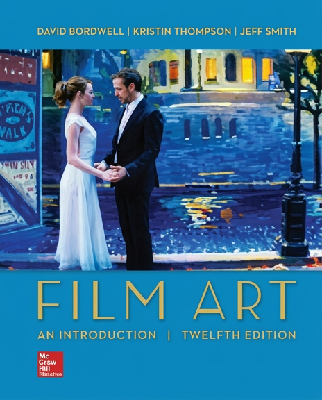

La "Bibbia" degli studi cinematografici
Pubblicato per la prima volta nel 1979 e costantemente aggiornato, Film Art: An Introduction è considerato a livello mondiale il manuale definitivo per chiunque voglia studiare il cinema non solo come forma di intrattenimento, ma come una vera e propria arte.
Il principio fondamentale del libro è che un film non è qualcosa che accade per caso, ma un "manufatto" progettato da esseri umani per suscitare specifiche reazioni ed emozioni negli spettatori.
